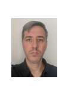

QA Engineer Senior · Automatización & Ingeniería de Calidad · Amplia trayectoria profesional
Especialista en testing manual y automatizado, con foco en automatización E2E con Playwright y Cypress, validación de APIs y estrategias Shift-Left. Actualmente lidero la adopción de IA generativa (Claude Code) en el ciclo de ingeniería de calidad, diseñando frameworks propios desde cero. Certificado ISTQB® Foundation 4.0.
Ingeniería de calidad, automatización y un camino hacia Producto

Soy QA Engineer Senior con amplia trayectoria diseñando estrategias de calidad y frameworks de automatización en industrias tan distintas como banca, e-commerce, logística y agro-fintech. Mi enfoque combina rigor técnico con pensamiento estratégico: no solo valido que el software funcione, sino que diseño los procesos para que la calidad se integre desde el inicio del ciclo de desarrollo (Shift-Left).
Lideré la transformación hacia una ingeniería de alta velocidad con IA generativa en Nera Agro, y actualmente desarrollo soluciones propias de automatización para Comenius, una academia de enseñanza de Matemática.
Mi próximo objetivo es seguir creciendo hacia la Ingeniería de Producto, aportando una mirada de sistema completo (no solo de features individuales) construida desde años de experiencia asegurando la calidad técnica que sostiene cualquier buen producto.
Mi enfoque de liderazgo está orientado a colaborar con los nuevos integrantes del equipo y guiar desde mi experiencia, buscando siempre resultados que generen valor real para la organización; por eso trabajé arduamente desde calidad para minimizar errores; maximizando los recursos de cada proyecto.
Más de 15 años de trayectoria profesional, liderando equipos y calidad en distintas industrias
Iniciador y responsable del proceso de ingeniería de calidad y automatización, liderando la adopción de IA generativa (Claude Code) en el ciclo de desarrollo. Diseñé múltiples frameworks E2E con Playwright y PactumJS, logrando una reducción del 85% en el tiempo de creación de suites de prueba.
Lideré el equipo de QA dentro de Tooling & Foundation, definiendo la práctica y las estrategias de prueba para toda la vertical de producto. Framework de automatización en Cypress y Playwright integrado a CI/CD con GitHub Actions.
Validación de calidad en proyectos web de e-commerce y logística. Framework de automatización en Selenium (Pytest) sobre flujos críticos, y coordinación de User Acceptance Testing con usuarios clave.
Validación de calidad en sistemas bancarios y financieros (SAP BP, ERP), pruebas backend y de servicios SOAP/REST, y monitoreo de procesos batch críticos en AS400 y Control-M.
Coordinación y liderazgo de equipos de operadores, definiendo KPIs de calidad y desempeño, y diseñando programas de capacitación para la incorporación de nuevos integrantes.
Stack técnico y metodologías aplicadas en cada proyecto
De QA Engineer a Sweeper: el puente hacia Ingeniería de Producto
Basándome en el análisis de Boris Cherny (VP of Engineering, Stripe) sobre arquetipos de desarrollo, identifico mi evolución natural como QA Engineer hacia el arquetipo Sweeper: el rol enfocado en simplificar y optimizar sistemas completos, no solo validar features individuales. Es un camino que profundiza mi expertise técnico y, al mismo tiempo, construye la mirada de sistema completo que sostiene una futura transición hacia Ingeniería de Producto.
Transito el Nivel 2 del camino, tras incorporar observabilidad y visión de sistema completo en Nera Agro. Además, ya apliqué prácticas propias de los niveles siguientes: definí estándares de calidad para toda la organización, apoyados en la metodología ISTQB CTFL 4.0 y en los principios de gestión de riesgos y buenas prácticas del syllabus de IA Generativa —priorización de pruebas por nivel de riesgo, estandarización de la gestión de issues y planificación acorde a la velocidad de desarrollo con IA—, automatizando los procesos necesarios para sostener ese ritmo desde la ingeniería de calidad.
Lideré también iniciativas de modernización técnica: diseñé NERA QA Solutions, un framework propio que orquestó 8 workflows de IA —generación de test plans y casos de prueba, ejecución automatizada con Playwright, evaluación estática ISTQB, gestión de contexto y promoción de regresión— integrado a Jira, Confluence y Xray: un proceso de calidad de punta a punta potenciado con IA.
Portfolio técnico disponible en GitHub
Framework de automatización E2E construido con Playwright y TypeScript, aplicando el patrón Page Object Model (POM) para mantener las pruebas escalables y fáciles de mantener. Repositorio de ejemplo que refleja la misma arquitectura que utilizo en entornos productivos.
Ver repositorio¿Te interesó mi perfil?